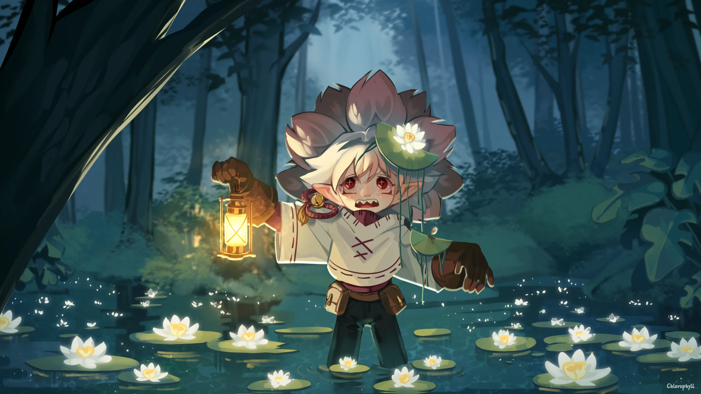
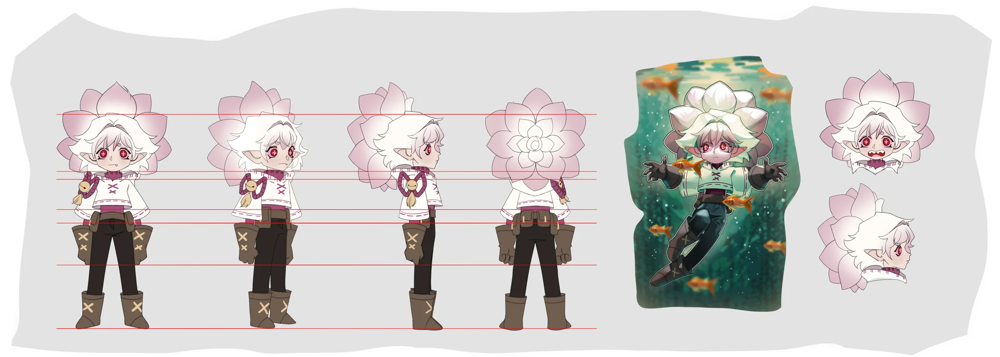

Lily Spirit
Character sheet and key illustration for a private client: a small forest spirit with a water-lily head, built to stay readable from every angle.Лист персонажа и ключевая иллюстрация для частного заказчика: маленький лесной дух с головой-кувшинкой, который читается с любого ракурса.
TaskЗадача
Keep a complex silhouette (layered petals) clear and consistent in every view.Сохранить сложный силуэт (слои лепестков) ясным и одинаковым во всех ракурсах.
My partМой вклад
- Turnaround on proportion guidesРазворот по линиям пропорций
- Two expression headsДве эмоции
- Underwater mood pieceПодводная сцена-настроение
- Key illustration with lanternИллюстрация с фонарём
DecisionsРешения
- Petal head as a single bold shape, even from the backГолова-лепестки как одна крупная форма, даже со спины
- Warm lantern vs. cold teal forest puts focus on the faceТёплый фонарь против холодного леса держит фокус на лице
- Calm vs. snarling heads show rangeСпокойная и оскаленная эмоции показывают диапазон
ResultРезультат
Sheet and illustration delivered to the client in 2024.Лист и иллюстрация сданы клиенту в 2024.

Readable from every sideЧитается с любой стороны
Front, ¾, side and back share the same guide lines; the back view turns the petals into an ornament instead of a blob.Фронт, ¾, профиль и спина на одних линиях; со спины лепестки превращаются в орнамент, а не в пятно.

Light as the focus toolСвет как инструмент фокуса
A single warm light source in a cold scene: the eye goes lantern → face → water lilies.Один тёплый источник в холодной сцене: взгляд идёт фонарь → лицо → кувшинки.